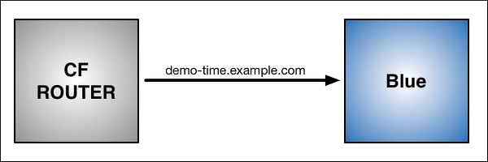
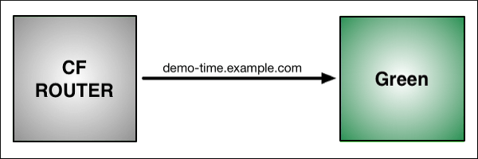

Blue Green Deployment
Goal
Demonstrate how to deploy an application with zero downtime on PCF.
Prerequisites
- Working PCF Environment
- Sample App
Blue-Green Deployment with PCF
-
Use the Cloud Foundry Command Line Interface (cf CLI) to push the application. Name the application “Blue” with the subdomain “demo-time.”
$ cf push Blue -n demo-time
As shown in the graphic below:
Blue is now running on Cloud Foundry. The CF Router sends all traffic for demo-time.example.com traffic to Blue.

-
Now make a change to the application. First, replace the word “Blue” on the web page with “Green,” then rebuild the source file for the application. Run
cf pushagain, but use the name “Green” for the application and provide a different subdomain to create a temporary route:$ cf push Green -n demo-time-temp
After this push:
Two instances of our application are now running on Cloud Foundry: the original Blue and the updated Green.
The CF Router continues sending all traffic for demo-time.example.com to Blue. The router now also sends any traffic for demo-time-temp.example.com to Green.

-
Now that both apps are up and running, switch the router so all incoming requests go to the Green app and the Blue app. Do this by mapping the original URL route (demo-time.example.com) to the Green application using the
cf map-routecommand.$ cf map route Green example.com -n demo-time Binding demo-time.example.com to Green... OK
After the cf map-route command :
-
The CF Router continues sending traffic for demo-time-temp.example.com to Green.
-
Within a few seconds, the CF Router begins load balancing traffic for demo-time.example.com between Blue and Green.

-
Once you verify Green is running as expected, stop routing requests to Blue using the
cf unmap-routecommand:$ cf unmap-route Blue example.com -n demo-time Unbinding demo-time.example.com from blue... OK
After cf unmap-route command:
The CF Router stops sending traffic to Blue. Now all traffic for demo-time.example.com is sent to Green:
- You can now use
cf unmap-routeto remove the routedemo-time-temp.example.comfrom Green. The route can be deleted usingcf delete-routeor reserved for later use. You can also decommission Blue, or keep it in case you need to roll back your changes.

Blue-Green Deploy Sample App
-
We will use a plugin for the CF CLI tool to automate a blue-green deployment. Let's start by getting the plugin from the
CF-Communityrepository:$ cf add-plugin-repo CF-Community https://plugins.cloudfoundry.org $ cf install-plugin blue-green-deploy -r CF-Community -
Navigate to the
starter-apphome directory:$ cd starter-app -
Use the plugin to perform a blue-green deploy:
$ cf blue-green-deploy sample-app -
Notice as the plugin creates a new version of the application called
sample-app-new. Now you can create your own blue-green deployments on your mission critical workloads!